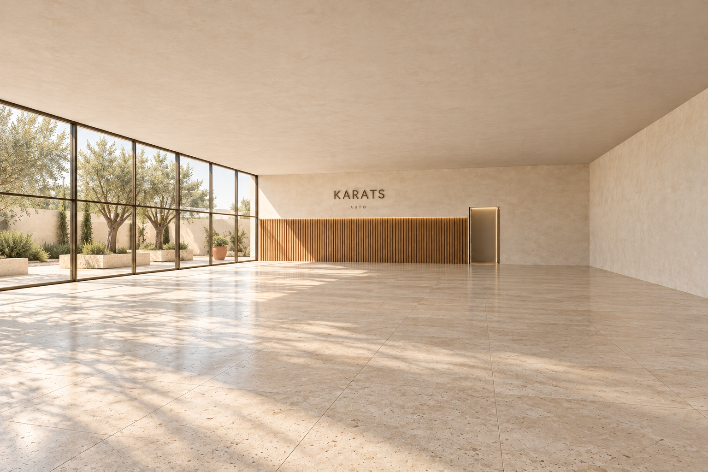
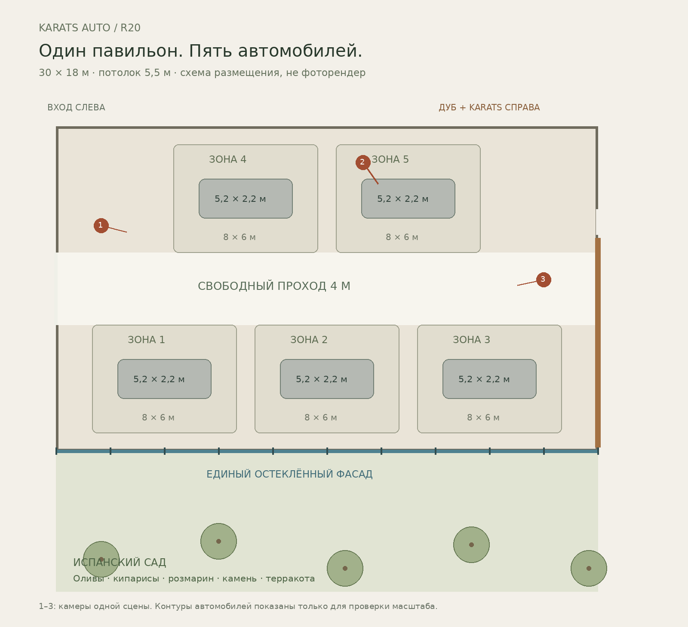
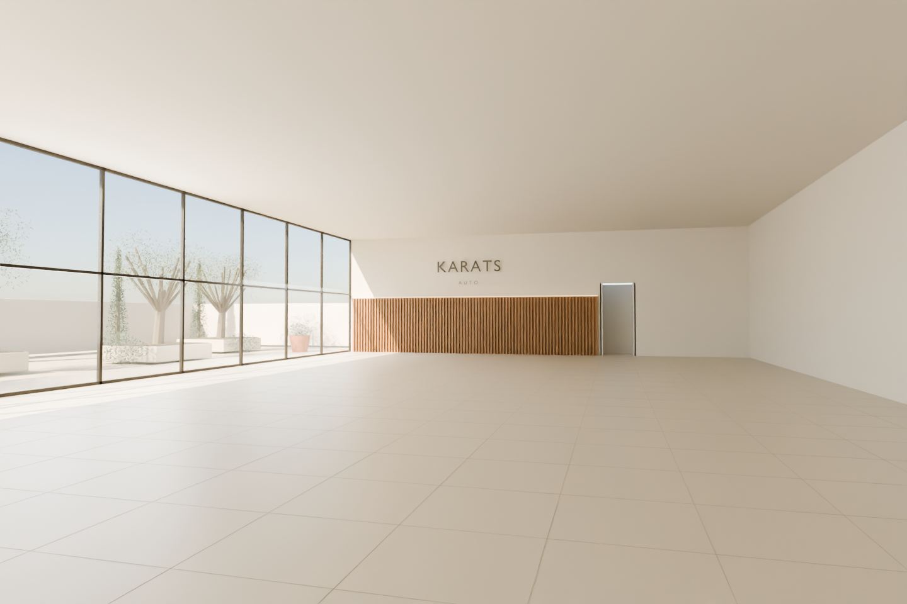
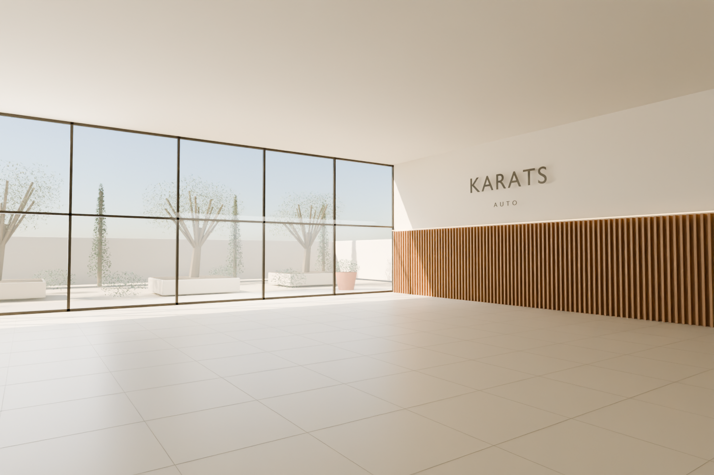
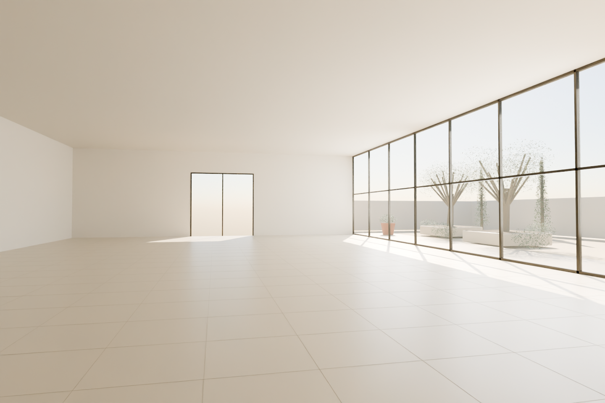

Фотографический образ: один AI-эскиз по новой геометрии, не результат Marble

Скачать PNGR20 / ОСНОВА ДЛЯ MARBLE
30 × 18 м · высота 5,5 м · пять зон по 8 × 6 м · проход 4 м.
Это проверенная пространственная основа, не финальный фотореализм. Три технических вида получены из одной модели. Фотографический образ показан отдельным AI-эскизом, не результатом Marble. В технических видах зелень и материалы упрощены. AI-эскиз: 1536×1024, без апскейла; запрошено high, провайдер сообщил low.
За единственным длинным стеклянным фасадом: оливы, кипарисы, розмарин, известняк, терракота и светлая штукатурная ограда. Испанский средиземноморский сад, не тропический отель.

Скачать PNG
Скачать PNG
Скачать PNG
Скачать PNG
Скачать PNGCreate → 3D → Chisel → Upload GLB. Загрузить Karats-R20-Chisel.glb, не коллаж и не старые R18/R19. Проверить масштаб и положение камеры до генерации. Импорт именно в Marble ещё не проверен.
В подключённом браузере Marble просит вход. Защищённый ввод учётных данных недоступен в текущей Telegram-сессии. Пароли в чат не отправлять. Ничего не оплачено и мир не сгенерирован.
Create a photorealistic premium automotive gallery in Spain using the uploaded 3D geometry as the spatial authority. Preserve one rectangular room, 30 metres long, 18 metres wide and 5.5 metres high. Do not shrink the room or change its footprint. Preserve the single long glazed facade with ten three-metre bays, its mullions and transom; the opposite continuous plaster wall; the oak feature wall in the short end; the adjacent narrow portal; and the entrance at the opposite end. Maintain their exact relative positions. No added rooms, columns, windows or wraparound glass corners. Keep the room EMPTY. No cars, people, furniture, podiums or floor markings. Its scale must support five generous car exhibition areas and a four-metre central aisle. Warm pale limestone tiles with fine pores and satin reflections, cream mineral plaster, natural vertical oak slats below the KARATS AUTO sign and subtle concealed warm light. Photographic material detail, no plastic CGI finish or mirrored floor. Through the glazing, create an elegant Spanish Mediterranean courtyard in the positions of the uploaded garden geometry: mature silvery olive trees, slender cypresses, rosemary, pale limestone terrace and planters, dry gravel, terracotta vessels and warm limewashed boundary walls. A quiet contemporary Spanish finca garden, not a tropical resort. Warm directional afternoon sunlight, soft olive-leaf shadows, balanced exposure indoors and outdoors. Keep architecture, garden positions and sunlight consistent throughout the world.
Экспортированный GLB заново открыт в чистой сцене: размеры пола 30 × 18 м, высота 5,5 м, 10 оконных пролётов, 3 камеры. Пять выставочных зон не пересекаются, центральный проход 4 м свободен. Проверка не является строительным проектом или расчётом манёвров автомобиля.
Исходная геометрия и материалы созданы для проекта. Это не переделанная версия R17. Фотоэталон остаётся художественной целью.
Официальная инструкция Chisel